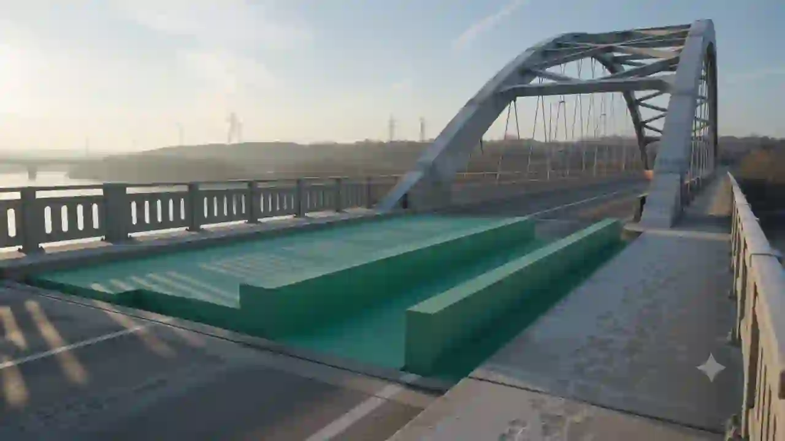
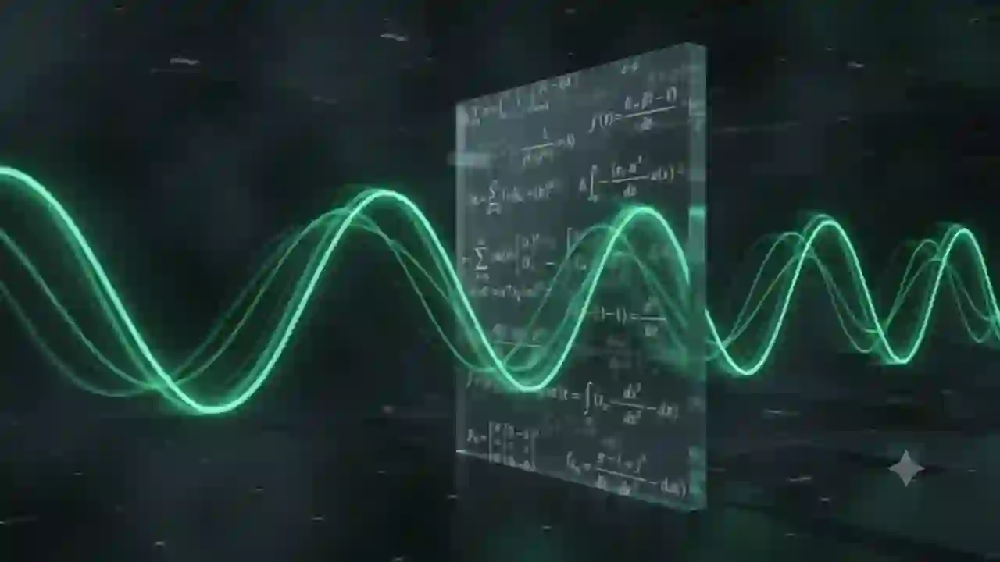
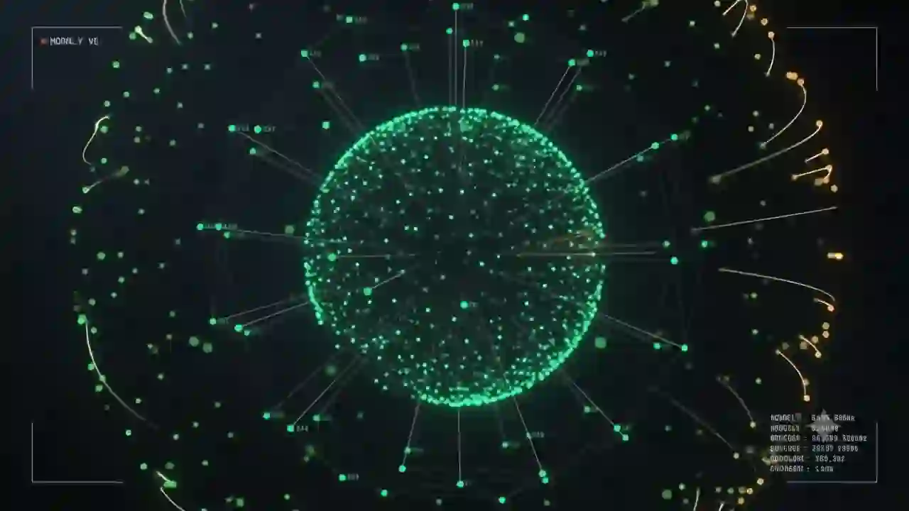
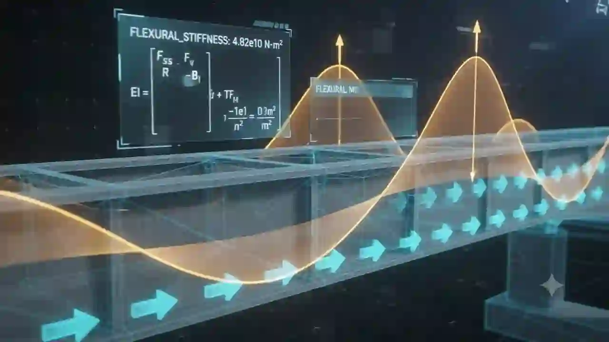

Chapter 1, The Hook
Infrastructure does not scream when it begins to die. It whispers.
It hides inside the concrete, inside the steel, inside the frequency of a truck passing at midnight.
Chapter 2, The Core Philosophy
This is what the inside of a dying bridge looks like.
We did not have to break one to show it to you. Real Z24 benchmark progressive damage replay.
Chapter 3, Georeference Lock
We know where it is. We know what it is. We know what it should be doing.
If it stops doing that, we will know, before anyone else does.
Chapter 4, Honesty as a Feature
Honesty is not a caveat. It is a feature.
Every number on this screen knows where it came from, and so do you.
Chapter 5, The Climax
Sixty seconds ago, the bridge was amber. Now it is red.
Sixty seconds from now, the news would have known. We knew first.
Chapter 6, The Settle
VITISH. Before the news does.
Autonomous self-auditing digital twin platform for concrete highway bridges.
VITISH SHM PLATFORM
Before the news does.
VITISH reads the hidden fatigue of concrete bridges before visible failure. Real Z24 benchmark data, real Euler-Bernoulli physics, real MQTT-to-WebSocket telemetry. No mockup anywhere in the demo.
docker compose up -d && cd backend && python app/run_all.py --demo
Chapter 2, Honesty as a Feature
Every number knows where it came from.
The SourceBadge cycles between LIVE, REPLAY, and SIMULATED. The ProvenancePanel renders its per-channel breakdown: node 6, ADXL355, real replay. Node 7, ADXL355, real replay. Node 8, ADXL355, real replay.
Honesty note: the hero bridge streams real benchmark through the real pipeline; 49 other bridges are illustrative, real locations, simulated health.


Key-Decisions #5
The sun moves the bridge more than the damage does.
Z24's modal frequencies swing roughly 10 percent with seasonal temperature, versus 1 to 2 percent for actual structural damage. Without temperature compensation, the system would flag weather as damage. With it, only real damage makes it through.
Cited: Neumann et al., arXiv:2409.17735. Ridge regression temperature compensation baseline trained on 1997-1998 continuous Swiss environmental cycle.
Chapter 3, Eyes and Ears
Two senses. One number. One uncertainty band.
The fusion engine carries cv at weight 0.40, vib at weight 0.35, load at weight 0.25, all visible on screen. The YOLO26s-seg segmenter is trained on CrackSeg9k (CC0). The ADXL355 sampled at 100 Hz matches the KU Leuven campaign.

Chapter 4, Bridging Data and Physics
The bridge, reduced to its equations, listening to itself think.
The parametric Z24 box girder materializes span by span: 14 + 30 + 14 metres, two interior piers at x = plus or minus 14 m, abutments at x = plus or minus 29 m, 29 deck segments under 10,000 triangles, no downloaded GLB, no cables.

Chapter 5, Interactive Demo Arc
Press and hold to run the 105-second demo arc.
Experience the progressive failure sequence verified by the test suite: BHI 87.1 GREEN at t=0, surface crack at t=45s, pier settlement at t=75s, tendon rupture at t=105s (BHI 33.6 RED).
Chapter 6, One Command Starts the Story
One command. The whole story.
Docker compose up. Run the backend. Open the hosted twin at /twin. The system passes all 24 verification gates and its 30-file backend suite. The cinematic promise becomes a developer reality.
docker compose up -d && cd backend && python app/run_all.py --demo
Four Layers, One Pipeline
Every block in this stack is open. Every block is real.
Modular architecture designed for rapid edge deployment across national highway networks.
Layer 1
Edge & Sensing
Z24 replay simulator plus ESP32-S3 and ADXL355 triaxial accelerometer nodes sampling at 100 Hz.
Layer 2
Communication
Eclipse Mosquitto MQTT message broker streaming 100 Hz sensor topics into FastAPI WebSocket server.
Layer 3
AI Processing
YOLO26s-seg, Vibration VAE+OCSVM, LSTM-AE, MiniRocket and Ridge, plus fused Bridge Health Index (BHI).
Layer 4
Twin & Copilot
React Three Fiber physics canvas, MapLibre 6 GIS map, Cesium ion 3D Tiles, and Copilot dispatch agent.
Pilot BOM and SaaS Pricing
Beneath Sydney Harbour's 2,400 sensors.
The reference implementation of the architecture MoRTH, IIT-M, and C-DAC are mandating for India's 1.7 lakh NH bridges by 30 September 2026.
Complete 10-node sensor hardware bill of materials for one bridge.
Per bridge per year at 1,000+ national bridge fleet deployment.
Per bridge monthly platform license above amortised infrastructure TCO.
National Highway bridges in India targeted under the 2026 mandate.
FAQ
The questions the jury asks.
Direct, unhedged answers to real engineering and deployment questions.
Deployment Intake
Request a Pilot Deployment
Connect your bridge infrastructure to the VITISH self-auditing telemetry pipeline.
We will be in touch. In the meantime, run the listener yourself with the developer quickstart command above.